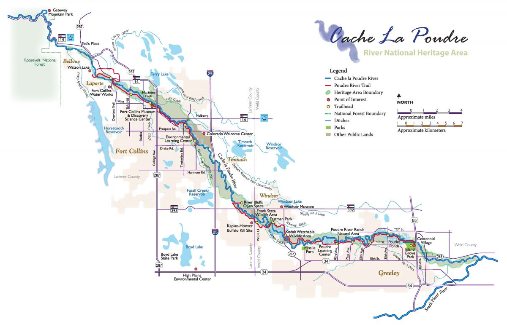

Lab 6: Timeseries Data
Using Modeltime to predict future streamflow
Introduction
In this lab, you will download streamflow data from the Cache la Poudre River (USGS site 06752260) and analyze it using a few time series methods. You will then use modeltime to predict future streamflow data with respect to historic and future climate data.
In this lab we will be using the following packages:
library(tidyverse) # for data cleaning
library(plotly) # for interactive plots
library(dataRetrieval) # for downloading data from USGS
library(climateR) # for downloading climate data
library(terra) # for working with raster data
library(exactextractr) # for zonal extraction
library(tidymodels) # for ML modeling
library(tsibble) # for time series data structure
library(modeltime) # for time series modeling
library(feasts) # for time series analysis
library(timetk) # for time series analysisGetting Requisite Data:
First, use this code to download the data from the USGS site. In this example, we will be using the Cache la Poudre River at Mouth (USGS site 06752260). You can use the dataRetrieval package to download the data. The code below downloads daily streamflow data for the Cache la Poudre River from January 1, 2013 to December 31, 2023. It then aggregates the data to monthly averages.
# Example: Cache la Poudre River at Mouth (USGS site 06752260)
poudre_flow <- readNWISdv(siteNumber = "06752260", # Download data from USGS for site 06752260
parameterCd = "00060", # Parameter code 00060 = discharge in cfs)
startDate = "2013-01-01", # Set the start date
endDate = "2023-12-31") |> # Set the end date
renameNWISColumns() |> # Rename columns to standard names (e.g., "Flow", "Date")
mutate(Date = yearmonth(Date)) |> # Convert daily Date values into a year-month format (e.g., "2023 Jan")
group_by(Date) |> # Group the data by the new monthly Date
summarise(Flow = mean(Flow)) # Calculate the average daily flow for each monthSecond, we will download climate data from the GridMET and MACA datasets. The GridMET dataset provides high-resolution climate data for the United States, while the MACA dataset provides downscaled climate data futures. We will use these datasets to obtain climate data for the Cache la Poudre River Basin.
To start, we will use the findNLDI function to find the basin for the Cache la Poudre River. This function will return a list of features, including the basin polygon, which we can use to extract climate data.
basin <- findNLDI(nwis = "06752260", find = "basin")
mapview::mapview(basin$basin)With an AOI defined, we can use the climateR package to download climate data from the GridMET and MACA datasets. The code below downloads monthly climate data for the Cache la Poudre River Basin from January 1, 2013 to December 31, 2023. It then uses the exactextractr package to extract the climate data for the basin polygon. The code also converts the climate data into a tidy format, necessary for time series analysis and joins the data to the streamflow data.
sdate <- as.Date("2013-01-01")
edate <- as.Date("2023-12-31")
gm <- getTerraClim(AOI = basin$basin,
var = c("tmax", "ppt", "srad"),
startDate = sdate,
endDate = edate) |>
unlist() |>
rast() |>
exact_extract(basin$basin, "mean", progress = FALSE)
historic <- mutate(gm, id = "gridmet") |>
pivot_longer(cols = -id) |>
mutate(name = sub("^mean\\.", "", name)) %>%
tidyr::extract(name, into = c("var", "index"), "(.*)_([^_]+$)") |>
mutate(index = as.integer(index)) |>
mutate(Date = yearmonth(seq.Date(sdate, edate, by = "month")[as.numeric(index)])) |>
pivot_wider(id_cols = Date, names_from = var, values_from = value) |>
right_join(poudre_flow, by = "Date")Third, we are interested in using exogenous climate data to predict future streamflow. Any time exogenous data is used to predict future values, it is required that we have values for the future. In other words, if we want to use PPT to predict streamflow in the future, we must have future PPT values.
We will use the MACA dataset to download future climate data for the Cache la Poudre River Basin from January 1, 2024 to December 31, 2033. The code below downloads the future climate data and converts it into a tidy format. We chose MAVA because it is developed by the same lab that created GridMET ensuring many of the same assumptions and methods are used.
Two quirks with MACA vs GridMET are that the units of temperature are in Kelvin and the names of the variables are different. The code below converts the temperature from Kelvin to Celsius and renames the variables to match those in the GridMET dataset.
sdate <- as.Date("2024-01-01")
edate <- as.Date("2033-12-31")
maca <- getMACA(AOI = basin$basin,
var = c("tasmax", "pr", "rsds"),
timeRes = "month",
startDate = sdate,
endDate = edate) |>
unlist() |>
rast() |>
exact_extract(basin$basin, "mean", progress = FALSE)
future <- mutate(maca, id = "maca") |>
pivot_longer(cols = -id) |>
mutate(name = sub("^mean\\.", "", name)) |>
tidyr::extract(name, into = c("var", "index"), "(.*)_([^_]+$)") |>
mutate(index = as.integer(index)) |>
mutate(Date = yearmonth(seq.Date(sdate, edate, by = "month")[as.numeric(index)])) |>
pivot_wider(id_cols = Date, names_from = var, values_from = value)
names(future) <- c("Date", "ppt", "srad", "tmax")
future <- mutate(future, tmax = tmax - 273.15)Your turn!
Through this lab, we will use the above datasets to analysis patterns in streamflow and predict future streamflow based on climate data.
1. Convert to tsibble
First, use as_tsibble() to convert historic data.frame into a tsibble object. This will allow you to use the feast functions for analysis.
2. Plotting the time series
Use ggplot to make plot focusing on Flow through time. Animate this plot with plotly!
3. Subseries
Next, we are going to use the gg_subseries() function to visualize the seasonal patterns in the data. This function will create a subseries plot, which shows the seasonal patterns in the data by plotting each “season” as a separate plot
Remember, season does not necessarily mean “winter, spring, summer, fall”. In this case, we are looking at monthly data, so the seasons are defined as the months of the year.
Describe what you see in the plot. How are “seasons” defined in this plot? What do you think the “subseries” represent?
4. Decomposition
Next, use the model(STL(...)) pattern to decompose the time series data into its components of trend, seasonality, and residuals. Chose a window that you feel is most appropriate to this data and explain your choice. Use the components() function to extract the components of the time series and autoplot to visualize the components.
Describe what you see and if it matches your understanding of the Poudre System / Western water trends. How do the components change over time? What do you think the trend and seasonal components represent?
Modeltime Prediction
Data Prep
Now we are going to use the modeltime package to predict future streamflow using the climate data. We will use the modeltime package to create a time series model. First, we need to prep the data. In this case we want both the histroic and future data to be in the same format where the date column is a Date object (name it date for ease) and the other columns are numeric. In both cases each need to be a tibble:
We will use the time_series_split() function to split the data into training and testing sets. The training set will be used to train the model and the testing set will be used to test the model. Rememer in this case we are using a time series split, so the training set will be defined by a period rather then a perent of hold out data. In this case we will use a 24 month period testing set (assess). Make sure to set a seed and extract the trainign and testing data.frames with training() and testing().
Model Definition
Chose at least three models to test - with one being arima and one being prophet. Store these models (specification + engine) in a list.
Model Fitting
Next, we will use the fit() function to fit the models to the training data. We will use the map() function from the purrr package to iterate over the list of models and fit each model to the training data. The fit() function takes a formula, a model specification, and a data.frame as arguments. Here you can build any formula you see fit. What components of the date object do you want to use (e.g. month? season?). What climate variables do you want to use?
The only requirement is that the response variable is Flow and the date variable is included as a predictor.
Once the models are fitted, we will use the as_modeltime_table() function to convert the list of fit models into a modeltime table. This will allow us to use the modeltime package to make predictions.
Model Calibration
Next, we will use the modeltime_calibrate() function to calibrate the models. This function takes a modeltime table and a data.frame of testing data as arguments. The function will return a modeltime table with the calibrated models.
The results of the calibration can be passed to modeltime_accuracy() to assess the accuracy of the models.
Calibrate the models using the testing data and assess the accuracy of the models describing what you see!
Forecasting
With a calibrated model set in place, we can now make predictions using the modeltime_forecast(). Becasue we are using exogenous data, we need to pass the actual data to the function. This is because the model needs to know what the actual values are in order to make predictions.
As a first step, lets use the calibrated models to make predictions on the testing data. Here you will need to specifcy the actual_data (historic data tibble) and the new_data (testing).
The outputs can be passed to the plot_modeltime_forecast() function to visualize the predictions.
Refitting the Model
Now that we have a calibrated model set, we can refit the models to the full dataset. This is important because the models are only as good as the data they are trained on. By refitting the models to the full dataset, we can improve the accuracy of the predictions.
To do this, we will use the modeltime_refit() function. This function takes a calibrataion table and the full historic tibble as the data argument. The function will return a modeltime table with the refitted models. Like before, the accuracy of the models can be assessed using the modeltime_accuracy() function.
Looking into the future
Now we are at the end! We can use the refitted models to make predictions on the future data. This is where we will use the future tibble we created earlier as the new_data. The actual_data argument will be the historic data tibble.
Using your refitted models, the modeltime_forecast() function will return a modeltime table with the predictions that can be passed to the plot_modeltime_forecast() function to visualize the predictions.
Wrap up
Looking at your predictions what do you think? How do the models compare? What do you think the future streamflow will be? What are the limitations of this analysis? What are the assumptions of the models?
Perhaps you see negative values in the predictions; perhaps you dont see strong agreement between the furture starting points around Jan 2024; perhaps you see other patterns that seem systemic and questionablly wrong. At this stage that is quite alright. In this simple lab, we did not worry about issue like cross validation, featrue engineering, or hyperparameter tuning. These are all important steps in the modeling process and should be considered in a real world application.
If interested, the processes learned in tidymodels are directly applicable here and you can take this model as far as you like adding new data, correcting non-normal data, and implemeting a resampling approach to improve the model. That said, you now have a string introdcutory grasp on what the world of timeseries is about.